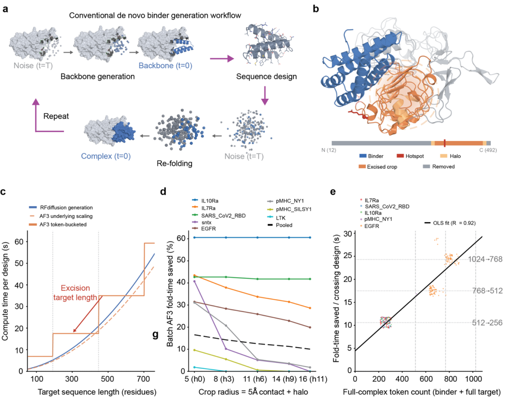
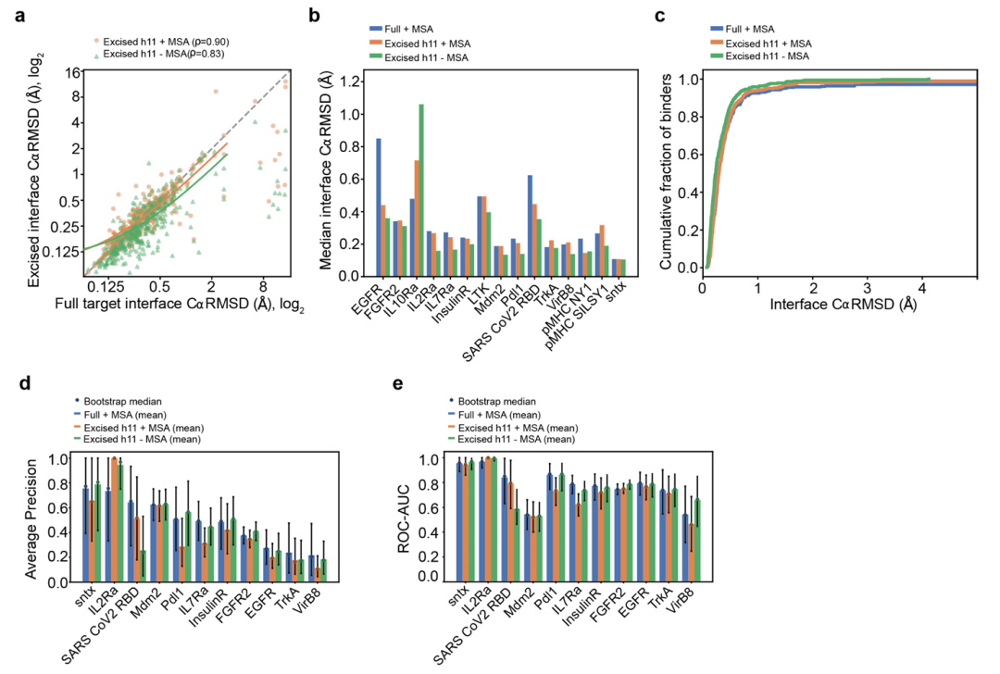
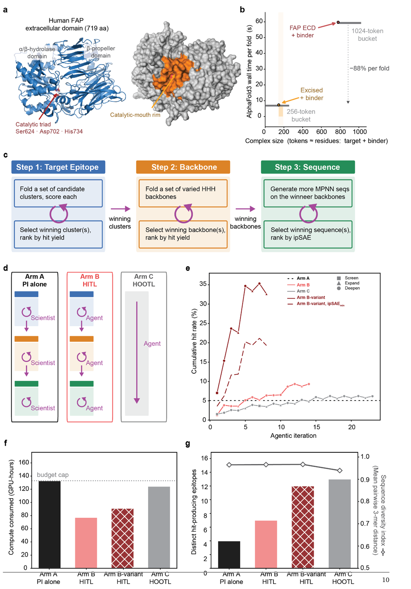
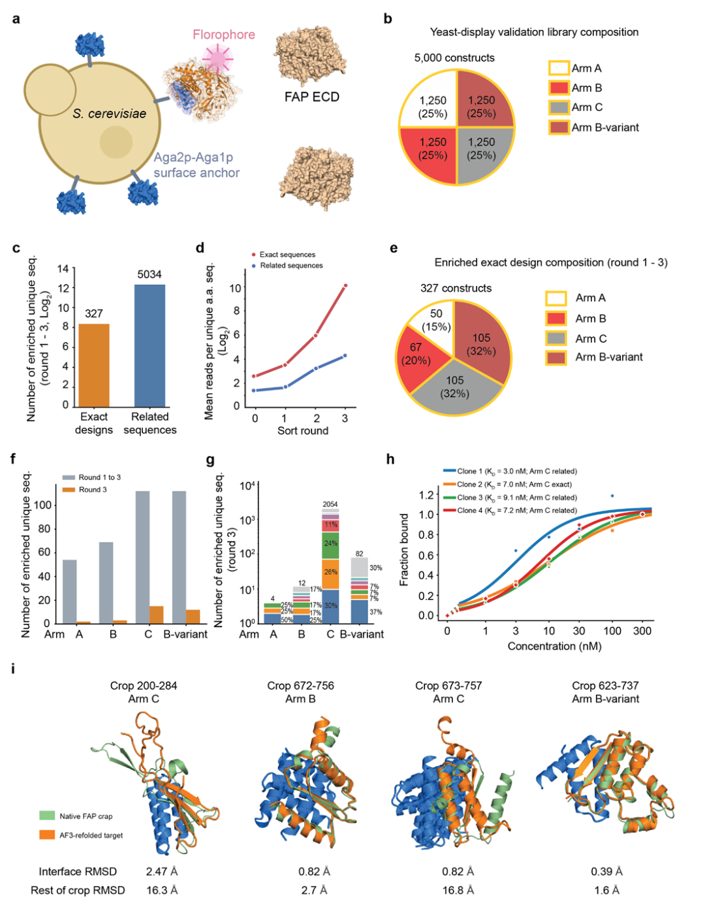

用 RFdiffusion 设计一个几十个氨基酸的 binder，后面让 AlphaFold 3 复核复合物时，常常要把整条靶标一起送进去。靶标若有几百个残基，binder 实际只接触其中一小块，绝大多数计算都花在离界面很远的结构上。Google Research、DeepMind 和 Cloud 团队这篇预印本，先从这笔算力账入手。
作者对大靶标做“表位裁剪”。它保留结合位点附近的一段靶标序列，用局部结构生成 binder，随后也用这个局部区域回折和筛选。之后再交给语言模型 agent 决定挑哪些表位、怎样分配 GPU 预算。论文有计算比较，也有针对 FAP 的酵母展示实验。我觉得它最有价值的地方不只是省了多少算力，而是把一个经常凭经验操作的设计流程，拆成了可测的结构保真、候选排序和实验富集三个问题。
这篇沿用的生成流程并不陌生。RFdiffusion 生成 binder 骨架，ProteinMPNN 配序列，AlphaFold 3 预测 binder 与靶标是否能按预期结合，再用界面指标筛选。它没有提出新一代 backbone 模型，改动主要落在靶标输入和计算资源的安排上。
AlphaFold 3 的运行时间在这里有个很现实的台阶。输入 token 会进入以 256 为单位的长度桶，稍微删掉几十个残基，如果仍在原来的桶里，运行时间未必变；跨到下一个小桶，时间就可能明显下降。作者在 15 个靶标的基准里观察到，7 个靶标的完整复合物已经处在最小的 256-token 桶，裁剪无法带来加速。对于 EGFR、FAP 这类大靶标，账就不同了。
FAP 的细胞外结构域有 719 个残基。作者在一个表位上，把它截成约 85 个残基的连续局部片段。实测 RFdiffusion 单个设计的 GPU 时间减少约 89%，AlphaFold 3 回折减少约 88%，ProteinMPNN 也减少约 66%。这是特定表位与硬件设置下的计时结果，不能说所有靶标都能省九成。它至少说明一个值得先算清的项目问题，输入长度是否跨过预测器的计算桶边界。

配图结论 表位裁剪只有在保住足够局部结构、并让输入跨过计算桶边界时，才能带来明显的实际加速。
裁剪最容易犯的错是只看回折结构是否接近原设计。作者先用 15 个靶标中可以定义连续裁剪窗口的 3666 个设计评估几何。带周围区域的裁剪结果，界面 Cα RMSD 中位数为 0.37 Å，88.2% 的设计低于 1 Å。若只问“局部界面有没有折回来”，这个结果相当好。
研发筛选还要问另一句，已知真 binder 是否依然排在假 binder 前面。作者在阳性样本足够的 11 个靶标上比较 ipSAE 排序。带靶标 MSA 时，全长复合物的平均精确率 AP 为 0.47，裁剪后为 0.40；ROC-AUC 从 0.78 到 0.73。后一个下降的置信区间没有跨过零。这说明结构形状很接近，候选排序仍可能损失。若某个项目要从几千条设计中挑几十条去合成，这一点比平均 RMSD 只差零点几埃更影响结果。
作者接着改变了回折设置。裁剪目标不提供 MSA，平均 AP 从 0.401 回到约 0.454，接近全长加 MSA 的水平。不过 SARS-CoV-2 RBD 在这种设置下明显变差，AP 从 0.49 降到 0.24。某些靶标的进化信息可能在稳定局部结构方面很关键，不能把“去掉 MSA 会提高分数”写成通用技巧。AP 回升本身也带着不确定性，需要按靶标看阳性与阴性的实际排序。
裁剪范围也有下限。周围保留太少，部分靶标的局部结构会失真。论文汇总的确认 binder 中，少于约 85 个靶标残基的裁剪片段只有 32% 通过 3 Å 界面几何关卡，85 到 200 个残基则约为 97%。这个落差有明显的靶标组成效应，VirB8 贡献了不少失败，Pdl1、TrkA 在较小片段上也能折得不错。因此 85 个残基更像保守的起点，不是一条硬性的生物物理定律。

配图结论 裁剪通常能保住局部结合几何，但预测排序会因靶标、MSA 和裁剪范围变化，不能只用低 RMSD 判断方案可靠。
在 FAP 项目中，作者固定了 RFdiffusion、ProteinMPNN、AlphaFold 3 的主流程，也固定计算命中的定义。比较的重点是决策权。A 组由研究者单独安排；B 组由研究者先定生物学目标区域，agent 再决定具体表位集合、裁剪大小、序列设计设置和预算；C 组让 agent 从整个靶标表面自己选择策略。每组 GPU 预算上限均为 A 组使用的 132.87 小时。
B 组最终用 77.18 GPU 小时，生成 19184 个候选，其中 1790 个符合计算命中标准，命中率 9.33%。A 组用 132.87 GPU 小时得到 1672 个计算命中，命中率 5.06%。两组的候选数量不同，设计长度、裁剪大小也会改变单个候选成本，所以直接比“生成了多少条”没有太大意义。每 GPU 小时的命中数从 A 组 12.6 提高到 B 组 23.2，算力预算的利用更清楚。
C 组全自主 agent 得到 1803 个计算命中，命中率 6.18%，用了 124.43 GPU 小时，最后还留了约 6% 预算没花。它的命中表位却达到 13 个，B 组是 7 个，A 组是 4 个。C 组把钱花在更广的靶标表面，单个区域的命中密度低一些。若项目只需要尽快找到少数好 binder，B 组的策略更合适；若目标是摸清更多可结合区域，C 组的覆盖面有它自己的价值。这是从该 FAP 案例推出来的取舍，不能直接推广到所有蛋白靶标。
论文还有一个 B-variant，乍看最亮眼，计算命中率达到 32.62%。它仍是人机协作，同时把靶标 MSA 关闭，原生排序指标也从 ipSAEmax 改成 ipSAEmin。作者明确将其作为评分设置对照，不纳入 agent 自主性排名。同一批设计若按它自己的 ipSAEmin 口径计，命中率是 19.31%。只截一个 32.62% 出来，说 agent 把命中率提升到这个数，会把流程设置和评价尺子的变化全算给 agent。

配图结论 人机协作在 FAP 案例里得到更高的单位算力计算命中，全自主 agent 找到的表位更多，B-variant 的高分还受评分设置变化影响。
作者从四组中各挑 1250 个设计进入酵母展示库。筛选后得到 327 条与计算设计的氨基酸序列完全一致、且发生富集的 binder 候选。A 组 50 条，B 组 67 条，C 组 105 条，B-variant 也是 105 条。这里的分母相同，观察到的实验富集数量与前面的计算命中率排序并不一致。B 组在计算里更集中、更省 GPU；C 组与 B-variant 在这次酵母展示中得到更多富集的原始设计。
四个代表性富集克隆的酵母展示表观 KD 为 3.0 到 9.1 nM，证明筛选中确实出现了纳摩尔级结合者。不过这些数值来自展示体系，不等于可溶蛋白纯化后的单价亲和力。作者也没有在这篇里完成 FAP 催化活性抑制、靶标结构域选择性和后续可开发性验证。尤其考虑到 C 组探索了更多表位，我会先看每组富集分子落在哪些结合区域、是否可能遮挡目标功能部位，再判断哪一种 agent 配置更适合具体药物项目。
这也是我觉得论文里最值得复盘的地方。裁剪的计算节省是真的，局部几何大多能保住，agent 对算力和表位的分配也产生了可测差异。但计算命中、实验富集、实际功能是三个连续关卡。前两关之间已经出现排序变化，第三关还没做完。后续若在新靶标上复用，我会先核裁剪前后的阳性排序，再让 agent 接管预算，而不是看到 GPU 时间少了就把整个流程直接换掉。

配图结论 四组在酵母展示中富集的原始设计数量与计算命中率排名不同，代表克隆证实了结合，但尚未证实 FAP 功能抑制。
Agent-guided epitope excision enables economical de novo binder design